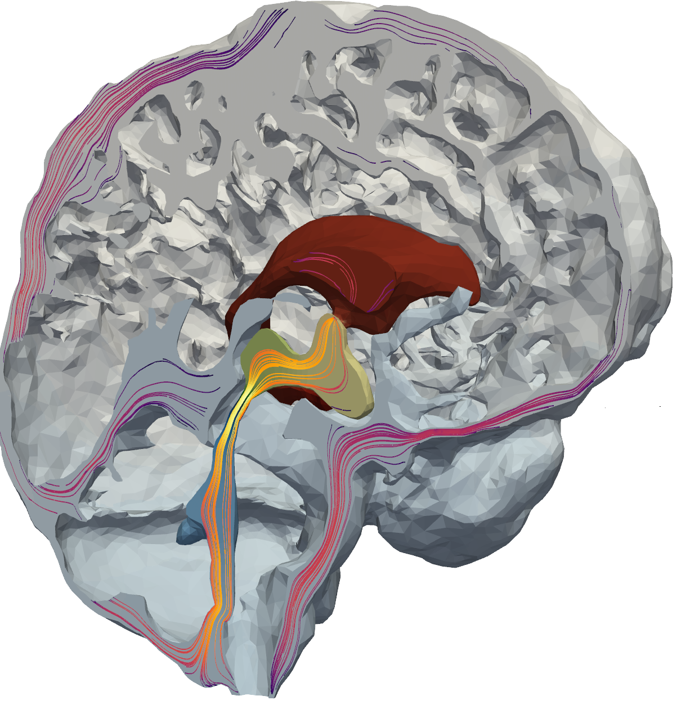

<html lang="en">
    <head>
        <meta charset="UTF-8">
        <meta name="viewport" content="width=device-width, initial-scale=1.0">
        <title>Figure 3</title>
        <style>
        @page {
            size: A4;
            margin: 1cm;
        }

        body {
            font-family: Arial, sans-serif;
        }

        h5 {
            color: black;
            text-align: center;
            font-size: 9pt;
            font-family: Helvetica;
        }
        h4 {
            color: black;
            text-align: left;
            font-size: 8pt;
            font-family: Helvetica;
        }

        p {
            font-family: "Arial";
            text-align: center;
            font-size: 7pt;
            font-weight: normal;
        }
    </style>
    </head>
</html>





<p style="position:absolute;left:639px;top:12px;width:171px;height:20px;">pressure-driven flow</p>
<p style="position:absolute;left:639px;top:133px;width:171px;height:20px;">cardiac-driven flow</p>
<p style="position:absolute;left:639px;top:260px;width:171px;height:20px;">vasomotion-driven flow</p>
<p style="position:absolute;left:46px;top:986px;width:160px;height:20px;transform-origin:83px 10px;translate:0px 0px;">baseline</p>
<p style="position:absolute;left:218px;top:793px;width:184px;height:20px;">high PVS flow</p>
<h3 style="position:absolute;left:11px;top:8px;width:22px;height:21px;">A</h3>
<h3 style="position:absolute;left:6px;top:350px;width:22px;height:21px;">G</h3>
<h3 style="position:absolute;left:499px;top:5px;width:22px;height:21px;">B</h3>
<h3 style="position:absolute;left:587px;top:5px;width:22px;height:21px;">C</h3>
<h3 style="position:absolute;left:499px;top:5px;width:22px;height:21px;">B</h3>
<h3 style="position:absolute;left:499px;top:5px;width:22px;height:21px;">B</h3>
<h3 style="position:absolute;left:499px;top:124px;width:22px;height:21px;">D</h3>
<h3 style="position:absolute;left:587px;top:123px;width:22px;height:21px;">E</h3>
<h3 style="position:absolute;left:587px;top:249px;width:22px;height:21px;">F</h3>
<h3 style="position:absolute;left:6px;top:590px;width:22px;height:21px;">H</h3>
<h3 style="position:absolute;left:403px;top:590px;width:22px;height:21px;">I</h3>
<h3 style="position:absolute;left:402px;top:776px;width:22px;height:21px;">J</h3>
<h3 style="position:absolute;left:6px;top:776px;width:22px;height:21px;">K</h3>
<h3 style="position:absolute;left:6px;top:975px;width:22px;height:21px;">L</h3>
<h3 style="position:absolute;left:243px;top:975px;width:22px;height:21px;">M</h3>
<h3 style="position:absolute;left:484px;top:975px;width:22px;height:21px;">N</h3>
<p style="position:absolute;left:281px;top:986px;width:181px;height:20px;transform-origin:83px 10px;translate:0px 0px;">high PVS flow</p>
<p style="position:absolute;left:521px;top:987px;width:181px;height:20px;transform-origin:83px 10px;translate:0px 0px;">high PVS dispersion</p>
<p style="position:absolute;left:20px;top:793px;width:177px;height:20px;">baseline</p>
<p style="position:absolute;left:381px;top:639px;width:64px;height:20px;rotate:270deg;">baseline</p>
<p style="position:absolute;left:369px;top:718px;width:88px;height:20px;rotate:270deg;">high PVS flow</p>
<p style="position:absolute;left:370px;top:913px;width:88px;height:20px;rotate:270deg;">high PVS flow</p>
<p style="position:absolute;left:381px;top:834px;width:64px;height:20px;rotate:270deg;">baseline</p>
<p style="position:absolute;left:-30px;top:530px;width:88px;height:20px;rotate:270deg;">high PVS flow</p>
<p style="position:absolute;left:-18px;top:434px;width:64px;height:20px;rotate:270deg;">baseline</p>
<p style="position:absolute;left:587px;top:621px;width:65px;height:20px;transform-origin:83px 10px;translate:0px 0px;">MCA-R</p>
<p style="position:absolute;left:587px;top:818px;width:65px;height:20px;transform-origin:83px 10px;translate:0px 0px;">MCA2-R</p>
<p style="position:absolute;left:16px;top:790px;width:383px;height:20px;">total PVS tracer content</p>
